Autopilot vs. Standard
When provisioning a GKE cluster, the first choice you have to make is whether to choose an Autopilot or Standard cluster. For exploratory workloads and learning environments, I recommend Autopilot. It should be cheaper for workloads that don't saturate the capacity of the worker nodes.
Cluster Basics
Simply enter a name and select your region.
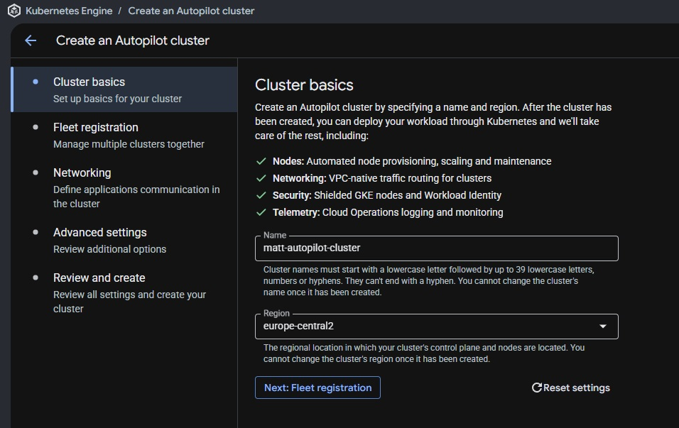
Fleet Registration
This is relevant if you would like to work with a group of clusters. Leave unselected.
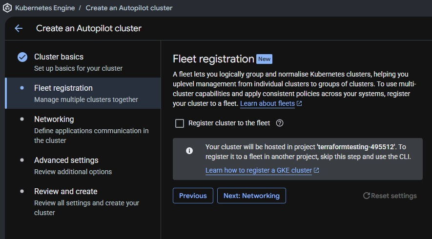
Networking
As recommended, switch to DNS-based control plane access. You can leave the rest of the settings as default, but in practice you would consult with your network engineers to select a specific network and node subnet rather than using the default project VPC.
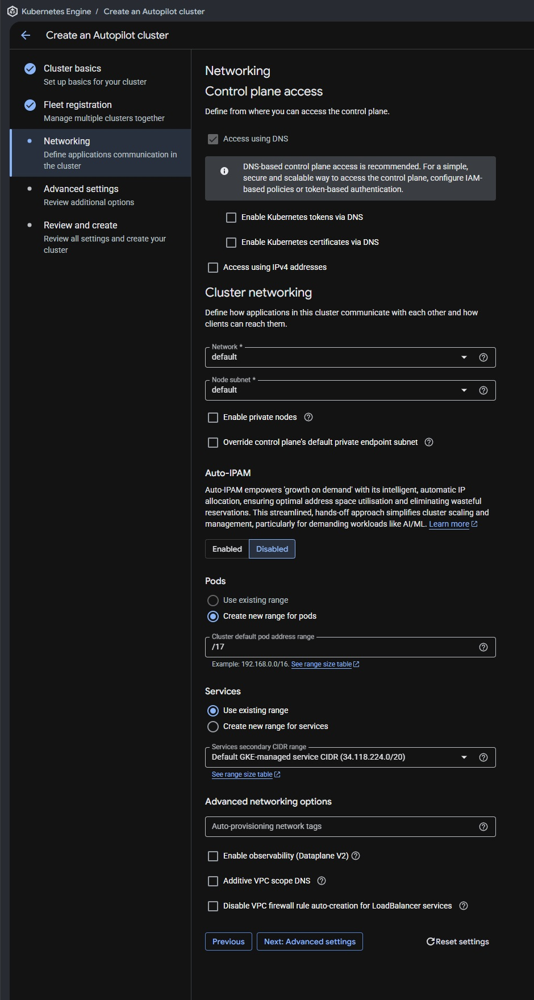
Advanced Settings
You can leave everything as is, we will explore manual service mesh and ETCD encryption at rest later in this series, rather than using managed services, for learning purposes.
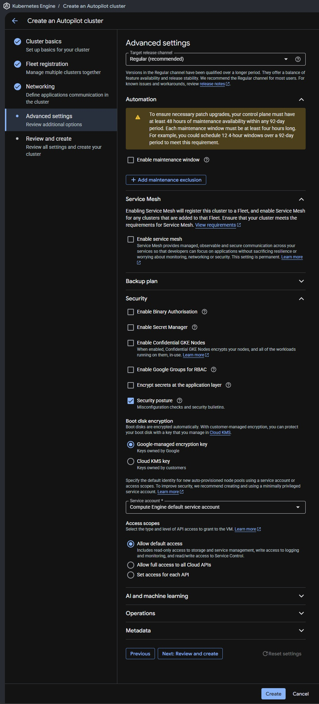
Review and Create
Simply verify your changes and create the cluster!
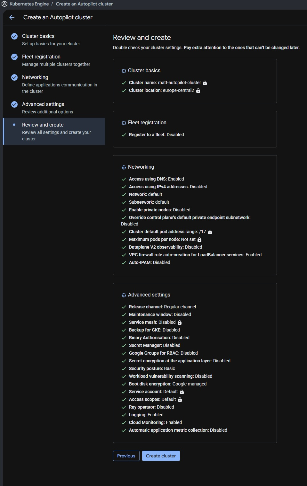
Checking the Provisioned Cluster
Wait a few minutes for your cluster to be provisioned. Now that the cluster has been provisioned, if you check the workloads you will see that all system resources are scaled down to optimize costs. As soon as we provision a workload, GKE will auto-provision a node for us and we can get up and running.
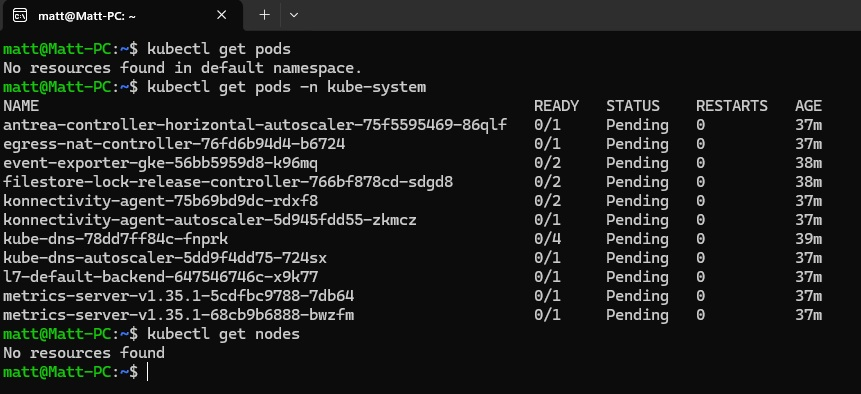
Connecting to the Cluster
Firstly, let's connect to our cluster by running the following gcloud command (I have configured gcloud CLI and kubectl in my WSL environment already):
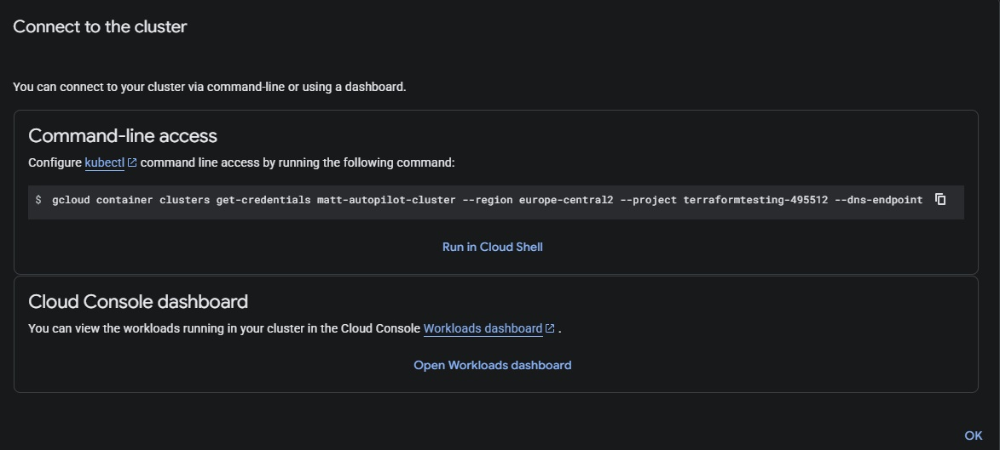
Now you can check your updated kube config with kubectl config view and see that the current context now points to the cluster we just deployed.
Now if you check the cluster, you can see we have no nodes! And all the system components are scaled down! Well, this is just because we need to provision a workload first.
Deploying a Sample Workload
So let's provision a sample NGINX pod. We'll call it test-pod and use the NGINX image in the default namespace:
kubectl run test-pod --image=nginx --namespace=defaultInspecting Injected Resources
Looks like we got a warning, Autopilot automatically injected resource requests and limits into our workload.
kubectl get pod test-pod -o yaml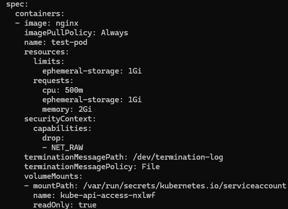
Adjusting Resource Requests
Well, those seem a little high, so let's lower them. Looks like we are not allowed to edit the resources on a live workload, so let's just kill the pod.
kubectl delete pod test-pod --forceAnd do a dry run to output a YAML file we can work with:
kubectl run test-pod --image=nginx --namespace=default --dry-run=client -o yaml > test-pod.yamlLet's add a request for 50m CPU and 50Mi memory, just as an estimate of what we might need.
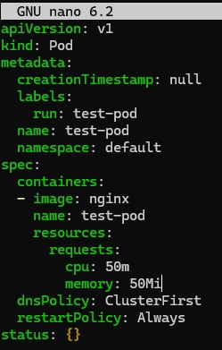
Apply the manifest:
kubectl apply -f test-pod.yamlGreat, looks like our workload was deployed successfully with much more reasonable requests. Now let's check the overall status of the cluster:
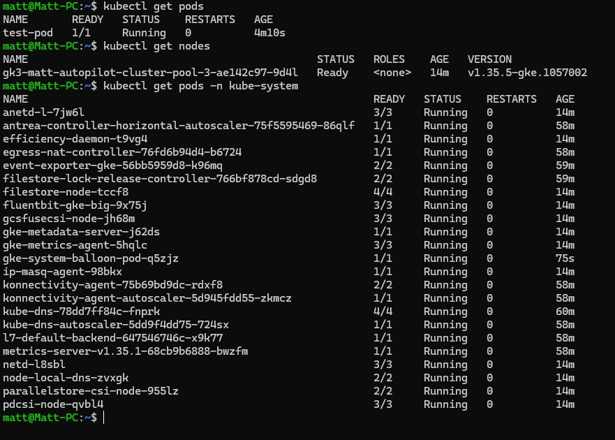
Now we can see that a node has been provisioned, and all of the system components are operating successfully!
Verifying the Workload
Let's verify the NGINX workload is running properly.
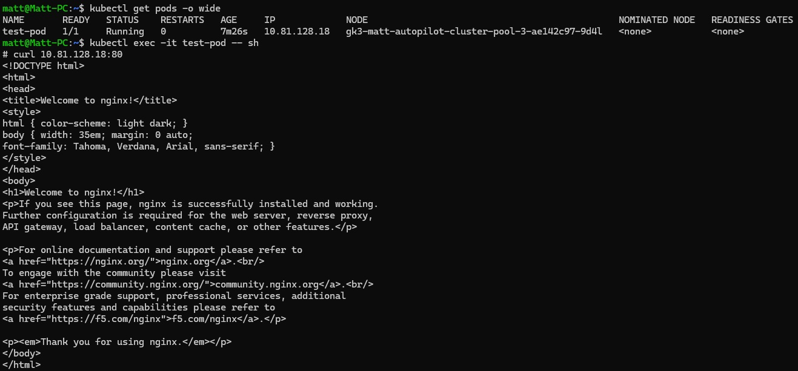
Great! Looks like everything is up and running correctly. In the next post we will look at exposing this workload using ClusterIP, NodePort and LoadBalancer services.